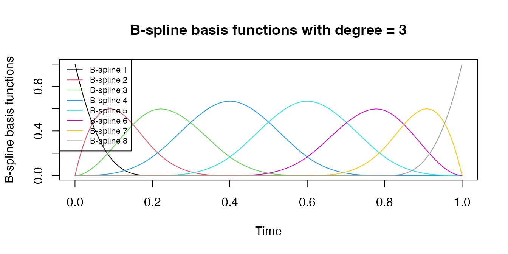

To model time-varying coefficients \(\beta(t)\), we use a set of B-spline basis functions, providing a flexible and accurate way to capture the nonlinear relationships between predictor variables and the time-to-event outcome over time. B-splines are piecewise polynomial functions that can be smoothly connected at a set of points called knots. The smoothness of the spline function makes it a suitable choice for modeling time-varying effects in survival analysis, as it allows for the estimation of smooth and continuous relationships between predictor variables and the time-to-event outcome.
These B-spline basis functions are generated using the splines R package with a fixed number of basis functions. The number of knots and the degree of the B-spline (typically, cubic B-splines are used) can be adjusted to control the smoothness and complexity of the resulting model. Increasing the number of knots results in a more flexible model that can capture more complex relationships, whereas reducing the number of knots leads to a smoother and simpler model. However, it is essential to strike a balance between flexibility and over-fitting the data when choosing the number of knots and the degree of the B-spline. We introduced the usage of a penalty term in later sections to control the smoothness with a larger number of knots.
To estimate the time-varying coefficients \({\boldsymbol\beta}(t)=\{\beta_{1}(t),\ldots, \beta_{P}(t)\}\), we span \(\boldsymbol\beta(\cdot)\) by a set of cubic B-splines defined on a given number of knots: \[\begin{eqnarray} \beta_{p}(t)=\boldsymbol\theta_{p}^\top\boldsymbol{B}(t)=\sum_{k=1}^K \theta_{pk} B_k(t), ~~ p=1, \ldots, P, \nonumber \end{eqnarray}\] where \(\boldsymbol{B} (t)=\{B_1(t), \ldots, B_K(t)\}^T\) forms a basis, \(K\) is the number of basis functions, and \(\boldsymbol\theta_{p}=(\theta_{p1}, \ldots, \theta_{pK})^T\) is a vector of coefficients with \(\theta_{pk}\) being the coefficient for the \(k\)-th basis of the \(p\)-th covariate.
The following plot gives a illustration of the construction of B-spline basis functions.
# Use the example data for illustration:
time.point <- seq(0, 1, length.out = 100)
# Load splines packages
library(splines)
# Set the number of knots and the degree of the B-spline basis functions
nsplines <- 8
degree <- 3
# Set the knot location
knots = quantile(time.point, (1:(nsplines-degree-1))/(nsplines-degree))
# Generate B-spline basis functions using the bs() function
basis_functions <- splines::bs(time.point, knots = knots, degree = degree, intercept=T)
# Plot the B-spline basis functions
plot(time.point, basis_functions[,1], type = "l", ylim = c(0, 1), xlab = "Time", ylab = "B-spline basis functions", main = "B-spline basis functions with degree = 3")
for (i in 2:ncol(basis_functions)) {
lines(time.point, basis_functions[,i], col = i)
}
# Add a legend to the plot
legend("topleft", legend = paste("B-spline", 1:ncol(basis_functions)), col = 1:ncol(basis_functions), lty = 1, cex = 0.7)